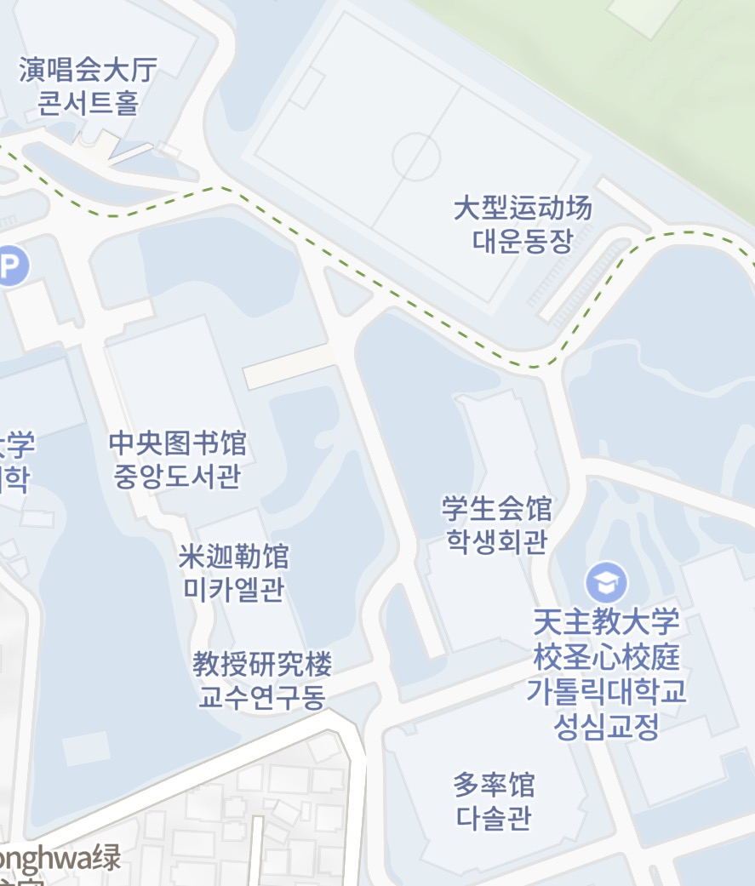

CAMPUS WALK NOTES
지도로 펼치는
우리 캠퍼스.
장소를 골라 이야기를 살펴보고, 지도에서 위치를 확인해 보세요.

관광지 통계 보기 → · 캠퍼스 별 모으기 게임 → · 과제 모음
중앙도서관 지도
Naver 지도Google 지도는 장소명 검색 결과입니다. B333의 실내 위치는 교내 안내를 확인해 주세요. 지도가 표시되지 않으면 아래 외부 지도 링크를 이용해 주세요.
Google 지도 새 창에서 열기KEEP THIS WALK
교실에서 운동장,
그리고 도서관.
배움에서 시작해 활기찬 운동장을 지나,
조용한 독서로 마무리하는 저만의 추천 순서예요.
개인적인 추천 순서입니다. 아래 지도는 기존 프로젝트의 위치 참고 이미지입니다.
